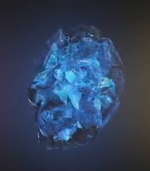

| Soul |
Orange |
In order to behold its power, the user must first sacrifice someone they love. It is also known as
the killing Stone, as its main power is stealing souls and trapping them within. It is rumored that
its user can resurrect others if the Stone is given souls in return. Another application of the
Stone includes soul sight, which is where the user can perceive and track souls, both living and
dead. |
 |
| Time |
Green |
It is the hardest to master and can easily create powerful consequences. To name a few of the
Stone’s seemingly endless abilities, there’s temporal looping, precognition, rewinding, healing, and
memory manipulation. A stipulation with this Stone is that if the user wields it to see into the
future, it cannot predict any outcomes where it is used offensively. |
 |
| Space |
Blue |
Grants intergalactic teleportation, which means the user can travel to any planet and any location
instantly. Other effective applications include banishing enemies to horrendous places or
transporting armies to unsuspecting worlds. The Space Stone can also forcibly move nearby objects,
a.k.a telekinesis. This ability is greatly augmented when combined with the Power Stone, and/or the
Reality Stone. |
 |
| Mind |
Yellow |
Grants its user mental manipulation of others, a.k.a mind control. It also gives the user telepathy,
a powerful energy beam attack, and truth/universal knowledge. Due to the power it gives to one’s
brain, effected individuals will either receive special abilities (such as Scarlet Witch,
Quicksilver, and Hawkeye) or they will slowly lose their mind and go insane. |
 |
| Realty |
Red |
Is known for warping the laws of physics to the user’s will, it is essentially an illusion
generator. The intensity and dominance of the “illusion” can be greatly enhanced if combined with
the Power Stone. Unfortunately, this Stone does have a stipulation. |
 |
| Power |
Purple |
Grants intergalactic teleportation, which means the user can travel to any planet and any location
instantly. Other effective applications include banishing enemies to horrendous places or
transporting armies to unsuspecting worlds. The Space Stone can also forcibly move nearby objects,
a.k.a telekinesis. This ability is greatly augmented when combined with the Power Stone, and/or the
Reality Stone. |
 |